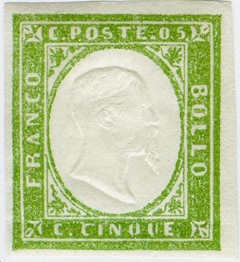


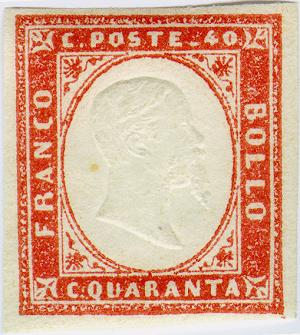


Sardegna
Return To Catalogue - Sardinia 1851 and 1853 issue - Sardinia forgeries of the 1851 issue - Sardinia 1854 issue - Sardinia miscellaneous - Italy
Note: on my website many of the
pictures can not be seen! They are of course present in the
catalogue;
contact me if you want to purchase the catalogue.
Sardinia 1851 and 1853 issue
Sardinia forgeries of the 1851 issue
Sardinia 1854 issue
5 c green 10 c brown 20 c blue 40 c red 80 c yellow 3 L brown
Value of the stamps |
|||
vc = very common c = common * = not so common ** = uncommon |
*** = very uncommon R = rare RR = very rare RRR = extremely rare |
||
| Value | Unused | Used | Remarks |
| 5 c | * | * | |
| 10 c | * | * | |
| 20 c | ** | * | |
| 40 c | * | *** | |
| 80 c | * | R | |
| 3 L | R | RRR | |
Perforated stamps and an imperforated stamp of 15 c in the same design are issued in Italy in 1862. The 3 L is rare in cancelled condition. The 10 c exists in many different colour shades.

I've been told that this 'ANNULATO' is a cancel from Sicily

I'm not certain if this fancy 'RESCELLO' cancel is genuine or not


A French numeral large "2240" cancel from Marseille and
a small "1896" cancel also from Marseille (French
arrival cancels).


A San Marino cancel and a Vergato cancel.

A Sicily cancel on a 10 c Sardinia stamp.
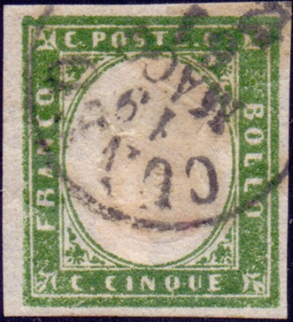
Genuine stamp with forged inverted center and forged cancel?
Possibly done by the forger Oneglia?
Stamps with inverted heads exist, they are either printer's waste (some very rare ones have been postally used) or forgeries.
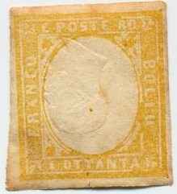


Fournier offered these inverted heads in his 1914 pricelist as first choice forgeries (all 6 values for 2 Swiss Francs). By the way, he also offers the 'normal' serie (same price).

Fournier inverted head forgeries.
Sperati also made forgeries with inverted head (the 5 c, 10 c, 20 c and 80 c). He bleached out the design of a genuine stamp, leaving the embossed center intact and then printed a new design, inverted, on top of it. In this way the experts were fooled; they tried to establish if the embossing was genuine (and it is in these forgeries!):


Sperati forgeries, images obtained from Richard Frajola's
website: http://www.seymourfamily.com/rfrajola/Sperati/sitaly.htm


Sperati 'proofs'.

The above stamps could be proofs, the embossed head is much smaller than in the normal stamps. I have also seen a 10 c blue and a 10 c black in this design.
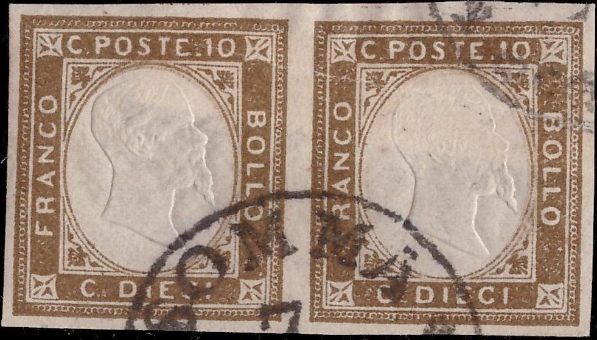


Some other 'mystery' stamps with much larger inscriptions than
the normal stamps, sometimes sold as proofs but I think they are
forgeries? Note that all the "O"s are very rounded.
This might be the non-issued set mentioned in the Serrane guide
under Italy. Apparently this set was prepared, but not issued due
to a robbery, the remaining stock was burned. They also exist
with inverted center.
The plates of at least the 5 c, 20 c and 40 c ended up in the hands of a certain David Cohn of Berlin (source: 'Focus on forgeries' by Varro E. Tyler). Reprint-forgeries were made with these plates by him after some retouching. The differences are small but can be seen, the colours are different from those of the genuine stamps. For example, in the 5 c reprint-forgery there is a break in the ornamental design at the left upper corner surrounding the ellipse (below the asterisk). In the 20 c there is a blue dot to the right of the upper right ornament surrounding the ellipse with the portrait of the king. In the 40 c there is a small break in the outer curved line of the ellipse just in front of the king's forehead and in the upper right corner with the ornament, the horizontal line is broken. These 'reprints' also exist perforated 11 1/2 to turn them into the first issues of Italy (however, the genuine stamps of Italy are perforated 11 1/2 x 12).

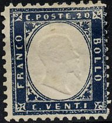


(Distinghuishing characteristics for the reprint-forgeries of 5 c
and 40 c)
(Distinghuishing characteristic for the reprint-forgery of 20 c;
small dot)
Note that the 5 c perforated was never issued in Italy, this is a bogus reprint!
There seem to be another reprint-forgery made by Usigli in Florence, I have no further information.
Fournier forgeries are rather deceptive. A 3 L forgery with 'FAUX' overprint (most likely Fournier forgery):
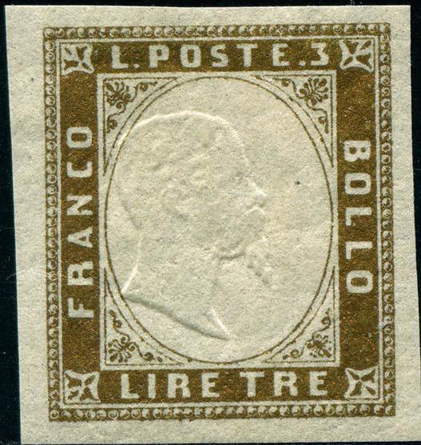

The '3' is different. Also note that the "CO" of
"FRANCO" is very squarish (as mentioned in the Serrane
guide).


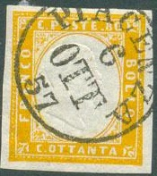

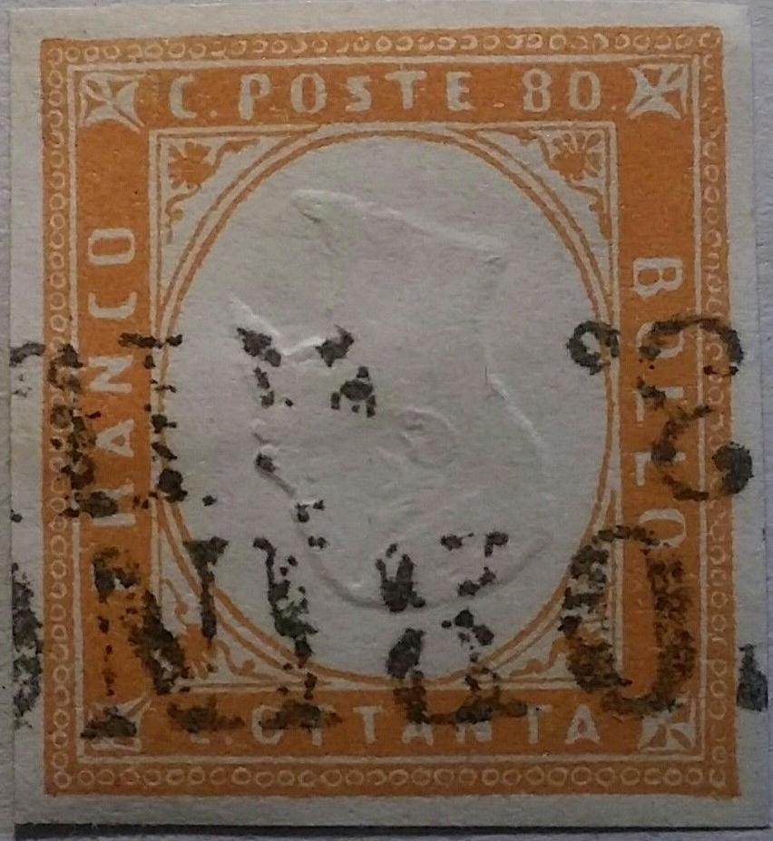
Fournier inverted head forgeries.
Distinguishing characteristics of the Fournier
forgeries:
5 c: The "Q" of "CINQUE" is different
10 c: The "1" of "10" should have a flattened
top part, also the triangular ornament under the "PO"
of "POSTE" should be broken in the genuine stamps, in
the Fournier forgery, it is intact.
20 c: The "N" of "VENTI" is too wide.
40 c: The "Q" of "QUARANTA" is an
"O" and the "4" is more open on top than in
the genuine stamps
80 c: the first "A" of "OTTANTA" is slanting
backwards
3 L: in my opinion, the "3" is too small
The forged cancels used by Fournier as shown in 'The Fournier
Album of Philatelic forgeries', I don't know on which issue
Fournier applied these forged cancels. Reduced sizes. The
"TORINO 13. GIU" cancel and "FOLIGNO 20 DIC
68" (see below or also Papal States)
was used on forgeries of this set. Another forged cancel that was
used by Fournier is "BOLOGNA 21 GEN 59" (see Papal States)
The "FOLIGNO 20 DIC 68" forged cancel as shown on a
Fournier Album page.

'Italy' page of the Fournier Album with the "PIACENZA 6 OTT
57" forged cancel and the "BOLOGNA 21 GEN 59"
cancel that were used above on Fournier forgeries.
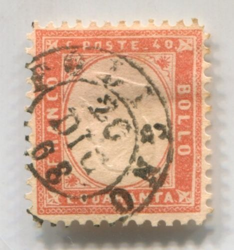
Fournier forgeries with "FOLIGNO 20 DIC 68" forged
cancel.
There seem to exist 'misprints' of the 20 c in the colour yellowish brown (instead of blue). This is however achieved through the application of certain chemicals. I haven't seen this kind of forgery.

A doubly printed 10 c with no center embossing; probably printers
waste.

Reduced size. In the above 3 L forgery the letters of the
inscription are different.

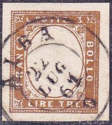
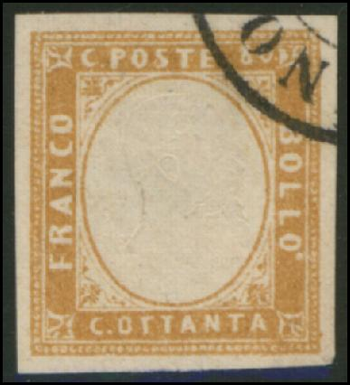 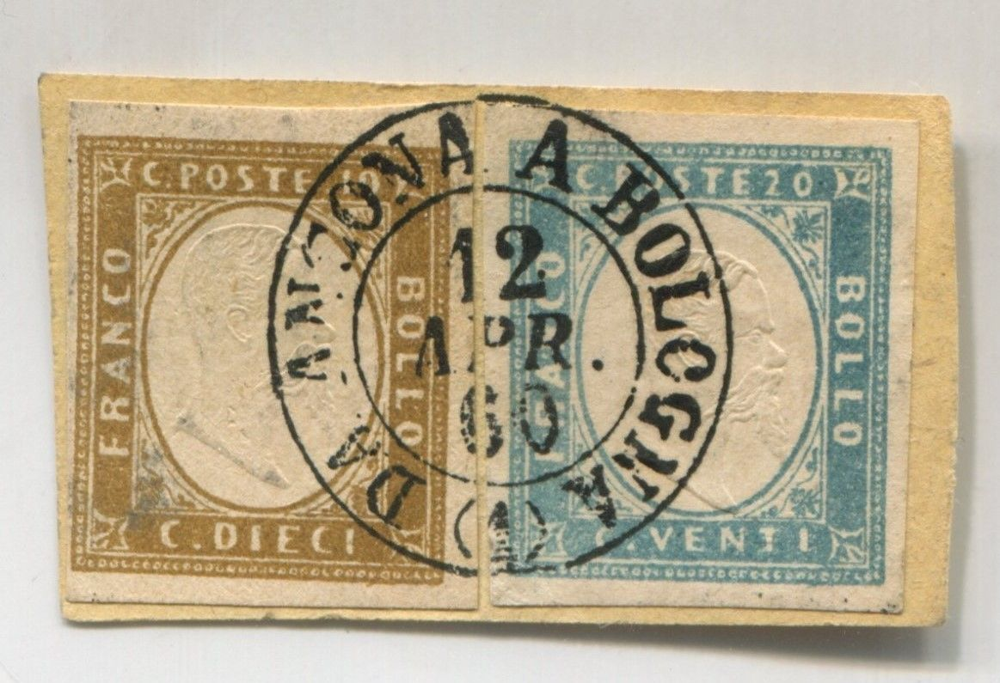


Forgeries of the 20 c, 40 c and 80 c, probably made by the same
forger, the "20", "40" and "80" are
not positioned properly, "QUARANTA" is written as
"OUARANTA" with an "O". The forged cancel
"DA ANCONA A BOLOGNA 12 APR. 60 (1)" appears on other
forgeries as well. Also "TODI 10 APR. 62 UMBRIA". Could
these be Oneglia products?
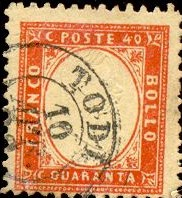


I think this tete-beche pairs were also made by the same forger
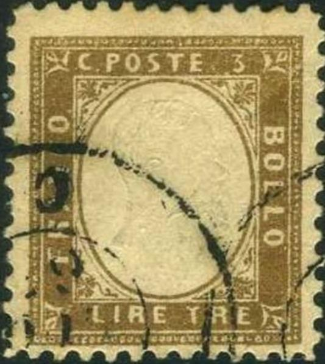

This perforated 3 L stamp with wrong inscription "C.POSTE
3" instead of "L.POSTE 3" might also have been
made by the same forger. It also exists imperforate. It has a
"TODI" cancel?


Forgery of the 3 L with different lettering, for example the
"C" of "FRANCO" is much more closed and the
"S" is more squeezed. There is no "-" in
front of the "3".
(Forged cancel)
I've seen a forgery of the 3 L with the word "FRANCO" inverted:
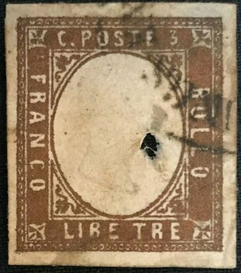 

3 L forgeries with the word "FRANCO" inverted and
"C.POSTE 3" instead of "L.POSTE 3". It seems
like they have the (forged) Austrian(?) cancel "ZEITUNGS EXPEDITION"?

Unclear printed 5 c stamp; most likely a forgery.

20 c with "1" in the center instead of the head of the
king.
A forged cancel "LANGENAU 8 2 60" (from Wurttemberg!) exists on some of these issues. Also on the 3 Lire of thenext issue, see http://www.ilpostalista.it/falsi/falsi015.htm
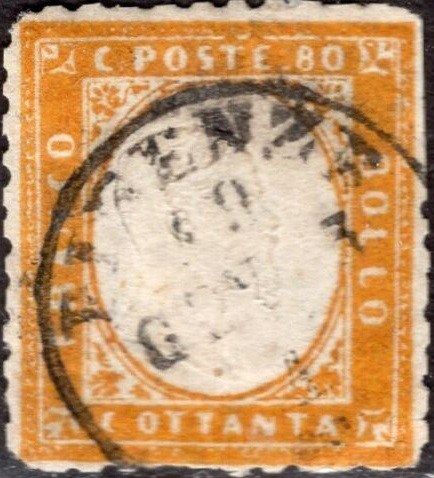


80 c stamp with forged "LANGENAU 8 2 60" cancel from
Wurttemberg. Also a forgery with inverted head and forged
"SUSA 14 LUG ??" cancel. Next to it a forgery with no
embossing and another forgery with perforation. All presumably
from the same source.

{kind=link}
{kind=link}
{kind=link}
{kind=link}
{kind=link}
{kind=link}
{kind=link}
{kind=link}
{kind=link}
{kind=link}
{kind=link}
{kind=link}
{kind=link}